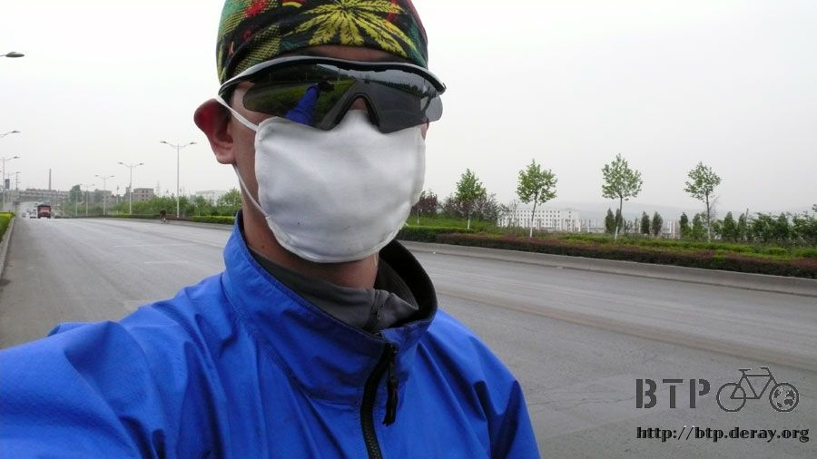
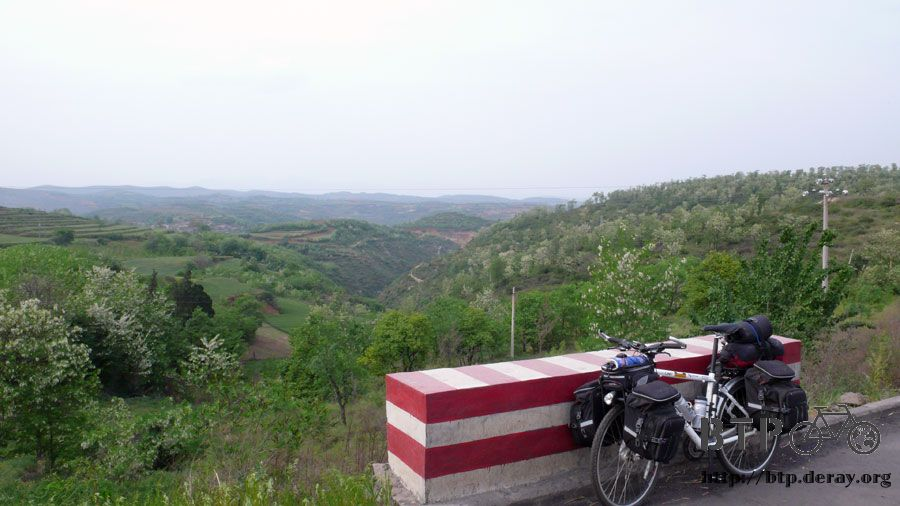
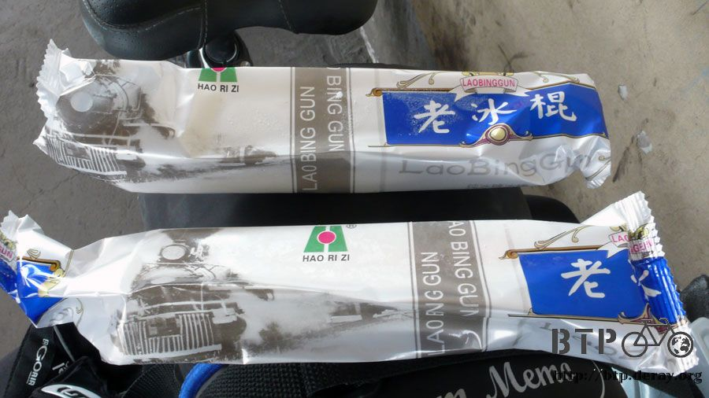
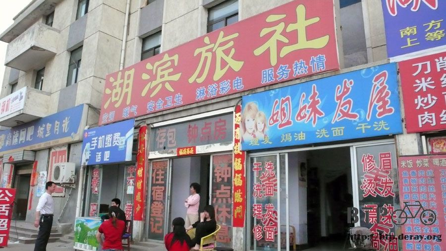

五毛錢的快樂
快要離開洛陽市區的時候，一位七十多歲，依然騎著單車準備要去上班的老阿伯問我要上哪去？
知道我要去三門峽之後，他說這一路都是上坡路，很不好騎，以前他也有騎過這一段到西安去。
我說沒關係，有上坡就會有下坡，辛苦會有代價的。
他只是笑笑的祝我今天順利。
這神秘的一笑，我花了一整天的時間才明白它的意思。Orz
雖然上坡之後都會有下坡，可是今天一整天，可都是在騎上坡，辛苦的爬了老半天，然後就給一小小段的下坡。
整體來說，上坡和下坡的比例大概是四：一，非常的機車也非常的累人。
同時我也一再的被大卡車所揚起的風沙和牽引機的烏煙瘴氣給摧殘了好幾天，
外加一些不知死活的小飛蟲，老是飛到我的鼻孔裡面，成為鼻涕的成分之一，相當噁心。
所以今天拿出了本來是到了沙漠才要開始使用的口罩，來保護臉部以及我的鼻孔。
包上頭巾、戴上太陽眼鏡然後再戴個口罩，就變成這個樣子了。
如果我現在跑去銀行裡面，應該會引起騷動吧。

從離開洛陽開始的第一條路，就是上坡。
爬了一整天，真是無止無盡的蔓延，很像在爬沒有終點的蘇花公路那樣，一直爬、一直爬。

上坡不會看你可憐兮兮所以就變得好爬一些，休息一下，找一間雜貨店補給一下零嘴，
現在行李中，除了賈叔那邊買的磚頭燒餅還吃剩兩個之外，已經沒有別的東西了。
在店裡先咕嚕咕嚕的喝完一瓶600cc果汁牛奶，然後買一斤像是太陽餅的東西(有八個)，再買一包糖果解嘴饞。
在店裡挑商品的時候，不論是餅乾還是飲料，只要拿起來一看，上面都佈著一層不薄的灰。
是這間店生意太差的關係嗎？還是單純的只是因為風沙很大的緣故~_~
反正製造日期跟保存期限，上面就算有標示我也不會相信，大概都是寫一百年後才會壞掉這樣。

吃著好吃的太陽餅充當早餐，繼續爬那無止盡的上坡。
上坡累倒是沒多大關係，但是有幾段路，空氣中瀰漫的噁心的臭味，
說是田裡施肥的味道也太不像了，很像是什麼東西腐爛掉的味道。
即使戴著口罩，那味道依然噁心的讓人聞一口就暈眩想吐。只好閉氣快速騎過去，
騎一小段距離之後，偷偷吸一口氣，看味道好一點沒？接著才敢大口大口的呼吸。
中午在義馬市吃一盤炒飯當午餐，吃完後拎著板凳和店裡提供的茶水坐在門口吹風順便陪小多。
店裡面的小朋友，看起來只有五六歲的樣子，猛盯著我看，我拿出今天買的糖果，問他要不要吃？
連問了幾次居然就一溜煙的跑掉了，大概覺得我是怪叔叔吧@"@
一分鐘後又騎著自己的三輪車出現，在我的面前繞圈轉呀轉，好像是在說他也有自己的腳踏車似的。
下午三點，在某一個加油站裡，買了五毛錢的白糖水冰棒解渴和消暑，
說穿了不過就是糖水結成冰而已，可是怎麼會這麼好吃呢XD

一邊吃，加油站的員工一家人，爸爸、媽媽和兩個兒子，因為生意很差的關係，所以就圍著我聊天。
爸爸說我這一路要騎去烏魯木齊，介不介意後面跟著一個人陪騎呀？
我說我老迷路，跟著我騎的人太受罪了。
但是爸爸似乎把這句話當成同意的意思，然後分別叫他的兩個兒子，去把家裡的單車準備一下，
等等就跟我一起上路去見見世面，好好磨練一下。
喂～！大叔你別開玩笑了，我只是來吃個冰而已，別掛兩個拖油瓶給我呀。
坐在加油站裡乘涼兼吃冰真是很舒服的事情，相較剛剛累的像條狗一樣的在騎山路，現在簡直是處在天堂。
為了讓處在天堂的時間維持久一點，我一根接著一根，悠哉的吃了四根冰棒。
差點忘了還有路要趕，洗把臉舒坦一下後，仍得離去，繼續騎那爬不完的上坡路。
看到山壁裡居然裝著一扇扇的門，難道是把山壁挖洞變成房子然後住在裡面嗎？真想進去參觀。

可能是空氣很乾燥的緣故，騎了這麼多天的車，身上居然連一滴汗都沒有流過。
少了揮汗如雨的感覺，自然就覺得比較輕鬆一些，可是膝蓋的痠痛，則日益明顯。
終於在騎了一百多公里幾乎都是上坡路之後，快要抵達三門峽前的十幾公里出現連續下坡。
正離開山區，就有一輛白色廂型車故意開很慢停在路邊等我經過，
一靠近他們，一個年輕人就搭訕的問了幾個問題，還不就是哪來的？要去哪之類的。
隨口回答完之後，他居然遞給我一瓶冰涼的鋁罐裝啤酒，讓我有點受寵若驚。
第一次被路人加油完，還會送一瓶啤酒說要給我解解渴的。
揮手向他們道謝，停下車看著手中的啤酒，心裡還是覺得很不可思議。
『忘了問他可不可以換汽水了....』心裡突然湧現這句話。
拉開拉環，大口大口的把啤酒灌進喉嚨裡，去它的什麼鬼上坡嘛！
一進入三門峽，第一個看到的招牌就是旅館。

所以沒等騎進市區，就先靠過去問一下價錢多少。
老闆一開始說30塊，我說謝謝，然後掉頭就走，打算找別間便宜一點的。
頭還沒掉完，老闆就主動留人，降價成20塊。
降價固然是好事，但是覺得他怎麼一開始開價那麼不老實，本來還是想說去找別間算了。
可是雙腳的痠痛讓我想早點休息，所以就原地住下來了。

起碼這裡也有個乾淨的床鋪，以及水龍頭能讓我洗洗衣服，重要的是有插頭可以充電，那也就不苛求太多。
問了問旅館的人，三門峽有沒有什麼名產可以吃？
結果希望落空，這邊是個蠻普通的地方，所以隔壁飯館隨意吃了一碗榨菜肉絲麵給肚子一個交代。
膝蓋給它噴很多肌樂，揉一揉按摩一下，再騎兩天就可以到西安，在那邊好好休息個兩天，參觀兵馬俑。
下午加油站的大叔說，等我騎到西安，那應該就算騎完一半了吧(以終點到烏魯木齊來講)
別開玩笑了，騎到西安，根本還不到三分之一，甚至四分之一的中國路線呢。
這間旅社的正前方就是火車站，廣播的聲音超大聲的，我在房間裡面就可以聽得很清楚每一個字。
幾點幾分，從哪裡往哪裡的火車就要開了，請旅客趕緊上車。
像這樣的廣播，從九點我躺在床上，一直播到凌晨都還在播個不停，有這麼多火車好開嗎？
同時可能也是因為火車站的緣故，半夜十二點，有人嚷嚷的說要住店。
凌晨一點也有人嚷嚷的要住店，凌晨兩點也是，凌晨三點也，每次有人說要住店，我都會被吵醒。
看著手錶，計算還有多少時間可以睡覺恢復體力....zzZZz
想念著那白糖水冰棒的滋味，五毛錢的快樂真令人回味。
繼續閱讀：5.4 地無三里平
中國-人民幣－ 1：4.3 台幣
5.3 |
總計：43元 |
雜貨店太陽餅一斤5元、果汁牛奶3元、糖果一包1元、午餐炒飯3.5元、鳳梨串1元、白糖冰棒四隻2元、晚餐榨菜肉絲麵3.5元、果汁牛奶4元、住店20元 |
|